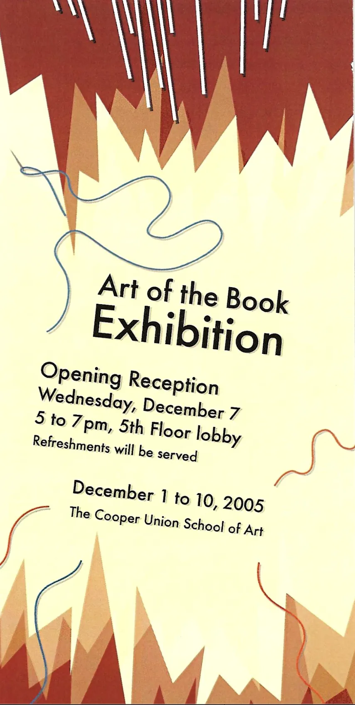

Margaret Morton


Graduation, 1967
In 1948, Margaret Willis was born in Akron, Ohio, and grew up in the nearby city of Cuyahoga Falls.

She attended Kent State University and was in her senior year in 1970, when National Guard troops fired on students protesting the Vietnam War.


New Haven, 1986
A year later, Margaret married Tom Morton, her high school boyfriend, who enlisted in the Navy after attending Dartmouth College. They spent the first years of their marriage in Gaeta, Italy, where Tom was stationed.
In 1975, Margaret and Tom moved to New Haven, Connecticut, where Margaret earned a master’s degree in graphic design and Tom in architecture. Margaret sought commercial assignments while teaching and painting. She had a studio in the offices of renowned architect Cesar Pelli, where Tom worked.


Margaret developed two bodies of work inspired by her time living in Italy, both monochrome: a series of large female heads based on Italian Renaissance painting, and “shadow paintings”, abstractions informed by Mediterranean architecture.

(Photo courtesy of Xuemeng Zhang)

In the early 1980s, Margaret began teaching at Cooper Union in New York City while living in New Haven. In 1985, Cooper offered Margaret a tenure track position in graphic design, and she and Tom moved to New York. Margaret was promoted to a full-time professor in 1999, and she taught at Cooper Union until she retired in 2018. Her Two-Dimensional Design course was a Foundation class for all first-year art students, and her Art of the Book class, accompanied by an annual exhibition, was legendary.

(Photo courtesy of Xuemeng Zhang)
Margaret and Tom bought an apartment in a tenement on the north side of Tompkins Square Park in the East Village, a few blocks from Cooper Union. During their first years there, a “tent city” built by unhoused people grew inside the park, then the epicenter of the city’s growing homelessness crisis. In the wake of the 1988 Tompkins Square Park riot, Margaret took up the camera to photograph the encampment. A longstanding interest in architecture drew her these shelters' provisional forms, their components scavenged from the streets. Before photographing these structures, she established relationships with their owners and earned their trust.
In 1991, when the city closed the park for a two-year renovation, she followed many park residents to nearby vacant lots, which in turn led her to other homeless communities throughout Manhattan. By photographing these structures and getting to know their owners, Margaret came to consider them not just tents but homes, expressions of a fundamental need for shelter.

Nathaniel was known as the Mayor of Tompkins Square Park. His tent and garden were destroyed in 14-degree weather on December 14, 1989. He returned to the park and built another home – pictured here – which was destroyed on June 3, 1991, when the park closed for renovation.


Margaret’s two photographs of Jimmy’s garden dramatically capture the essentials of her project. Jimmy built a pond in the center of a vacant lot, separate from his tent, which can be seen in the back of the lot against a building. To construct the pond, he assembled stones; garbage bags; five tires; an upholstered armchair; a skid; a refrigerator shelf; a wooden fence; and a metal post. He filled the pond with water carried from a fire hydrant down the street and purchased goldfish to inhabit it.
Eight days later, when Margaret returned to photograph Jimmy’s garden again, the lot had been bulldozed, and Jimmy had disappeared.


As Margaret saw these dwellings bulldozed, a sense of urgency took hold. The idea of a book began to form, which she initially called “The Architecture of Despair.” Wishing to allow those she photographed to tell their own stories, she recorded their conversations and asked them to sign releases for the use of their image and words. In the mid-1990s, in addition to teaching and working tirelessly in the field, she produced her first two books. In 1993, she and Diana Balmori co-authored Transitory Gardens, Uprooted Lives; and in 1995, Margaret published The Tunnel.
Margaret and Tom separated at this time for reasons unrelated to her work. Working independently, Margaret also shed the formalisms of her married years, redirecting her attention toward the urban inequality she witnessed daily.
Transitory Gardens, Uprooted Lives (1993) was written in collaboration with Diana Balmori, a landscape architect who was her friend and mentor. In her text, Balmori argues that the gardens of New York City’s unhoused residents unsettle the notion of a garden as "the domain of settled or prosperous individuals only." The gardens that appear in the book are not emblematic of abundance and opulence but rather suggest an "essential need ... perhaps through them, we can learn again what a garden is.”

In 1991, Margaret learned of a community living in an abandoned Amtrak tunnel on Manhattan’s west side. She returned to the tunnel regularly between 1991 and 1995, when the residents were forced out and Amtrak reopened the tunnel to train traffic. Subsequently, Margaret helped the Coalition for the Homeless place many tunnel residents in supportive housing.
With The Tunnel, Margaret established the template for her subsequent books. The photographs are printed full-page, and the text, except for Margaret’s brief, factual introduction, are first-person accounts. Accompanying this photograph of Bernard, who was her guide to the tunnel and its community, are his reflections on living in the tunnel: “This existence has done so much for me. It’s taken me from my vanity. . . I had lived on the West Side for twelve years, and for me to be in my neighborhood and just to adapt to the lifestyle of a homeless person. . . It’s been remarkable that I have done it without shame.”

By 1997, all the encampments in Manhattan were cleared, signaling the end of Margaret’s field work. In the next few years, she focused on exhibitions and preparing the book she had originally envisioned that summarized the entire project. Renamed Fragile Dwelling, it presents an inventory of communities, beginning with those on the Lower East Side, which were featured in Transitory Gardens, and The Hill at the foot of the Manhattan Bridge, as well as encampments along the East and Hudson Rivers.
She was now able to see her subject in its entirety: the 1970s fiscal crisis; the chronic rise of homelessness; a municipal alliance with real estate interests, exacerbating gentrification and displacement; and crackdowns on homeless communities, accompanied by reductions in social services.


Glass House was an abandoned glass factory a few blocks from Margaret’s apartment, which a group of squatters were renovating. In 1993, Margaret was introduced to this group and asked to attend one of their house meetings. She earned their trust and documented their community in photographs, video and audio recordings, but her work was cut short after only four months, when the police stormed the building and evicted the residents.
Years later, Margaret received a letter from one of the Glass House residents, which led her to track down the others as best she could. This led to her to publish one more book on New York’s homelessness crisis of the 1990s, with an epilogue detailing some of the residents’ lives following the 1994 eviction.


In the summer of 2002, Margaret accompanied her friend Virlana Tkacz, director of Yara Arts Group, to document sites referenced in a Kyrgyz epic poem that Virlana planned to adapt as a theatre production. On their six-week journey into the mountains of Kyrgyzstan, Margaret encountered ancestral Islamic cemeteries that astonished her.
On several trips over the next three years, she documented these miniature cities (the architectural forms are half-human scale), which culminated in Cities of the Dead. This was Margaret’s first project using a digital camera.


In 2012, Margaret gained access to the 1.2 million-square-foot interior of the James A. Farley Post Office Building, long abandoned and dilapidated, empty of the thousands of postal workers who had worked there. The Moynihan Train Hall on the first floor had been approved, but work had not yet begun. Wearing a hard hat and construction boots, Margaret wandered for three months throughout this ruin in the heart of Midtown Manhattan. This was her first project photographed in color.
Margaret exhibited this work in the Postmaster General’s office on an upper floor of the building and at the Architectural League of New York. She was working on a book, which sadly she had not finished at the time of her death in 2020.

(photo courtesy of Janet Odgis)